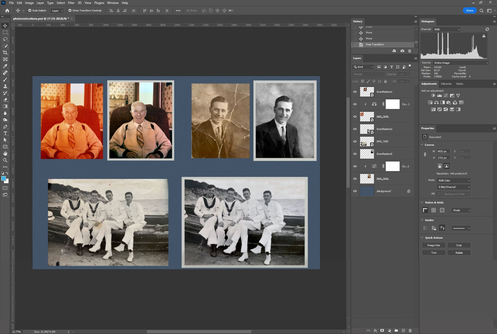
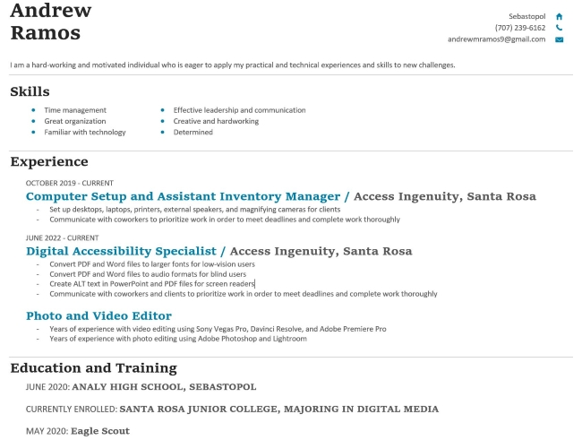

Photography and Photo Editing

Hello, my name is Andrew Ramos. I am 22 years old, and I am based in Sonoma County, California. My passion for digital media began when I was in elementary school and I wanted to make fun, short movies with my friends. I began taking digital media classes in middle school where I took two years of Photoshop and video editing classes. I continued my education by taking three years of video editing classes in high school. Currently, I am working on earning my Associate's Degree and Digital Media major at the Santa Rosa Junior College. So far I have taken a variety of digital media classes, including Adobe Photoshop, Drone Piloting and Imaging, Video Production, and more. I enjoy editing and producing videos capturing my hobbies and adventures, especially the trips I go on. On these trips, I like capturing interesting and new perspectives utilizing action cameras, DSLR cameras, and drones. Recently, I have gotten a lot more into photography after purchasing some nicer camera equipment. In my free time, I love to backpack, mountain bike, camp, airsoft, play video games, hike, work out, overland, and hang out with my friends.
Throughout my many years of experience in the world of producing digital media, I have learned relevant and important skills. Alongside my other jobs, I have learned to be a hard worker and organized. With my passion for digital media, I believe that I have what it takes to provide you with the variety of services that you may need.


